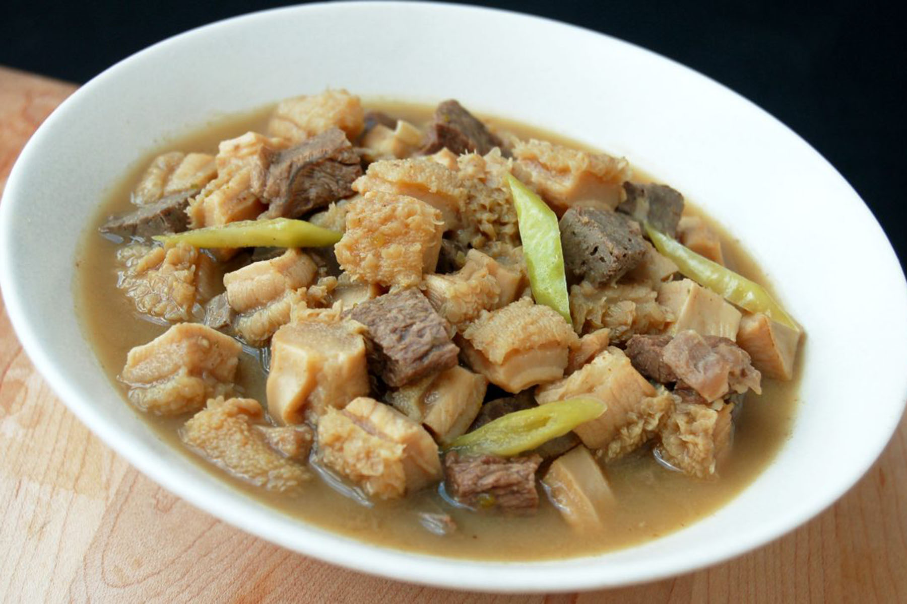

Description
Papaitan is a famous Ilocano soup dish mostly composed of cow or goat innards. The name of this dish was derived from the Filipino word “Pait”, which means “bitter”. The bitter taste of this soup comes from the bile. This is a bitter juice extracted by the liver and stored in the gallbladder to aid digestion.
- 1/2 lb ox tripe
- 1/2 lb cow’s small intestine
- ½ lb beef thinly sliced and chopped
- ½ lb cow’s heart
- 2 tbsp bile
- 2 thumbs ginger julienned
- 1 piece onion diced
- 6 cloves garlic crushed and chopped
- 8 cups water
- 4 to 6 pieces finger chilies
- 2½ tablespoons salt
- 1/2 tablespoon ground black pepper
- 1 to 2 pieces lemon or 5 to 8 pieces calamansi
- 2 tablespoons cooking oil
- Heat a cooking pot and pour-in 4 cups of water and put-in 1 tablespoon salt. Bring to a boil.
- Put-in the ox tripe and small intestines and simmer until tender. This should take approximately 35 to 50 minutes.
- Turn off heat. Remove the tender ox tripe and small intestines then slice. Set aside. Discard the water.
- Heat a clean cooking pot and pour-in cooking oil.
- When the oil is hot enough, sauté garlic, onion, and ginger.
- Add the beef, heart, sliced intestines, and tripe then cook for about 3 to 4 minutes.
- Add 1 1/2 tablespoon salt and ground black pepper then stir for a minute.
- Pour-in remaining 4 cups of water and bring to a boil. Simmer for 40 minutes (you may add more water if needed).
- Add bile then simmer for 5 minutes.
- Add the finger chilies and squeeze-in the lemon juice then simmer for 3 minutes.
- Turn off the heat and transfer to a serving bowl.
- Server hot. Share and enjoy
|